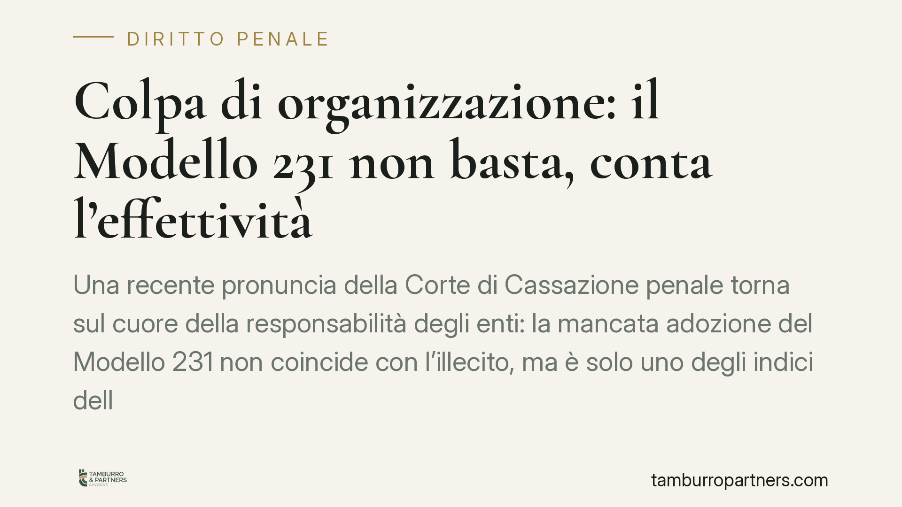

Colpa di organizzazione: il Modello 231 non basta, conta l'effettività
Una recente pronuncia della Corte di Cassazione penale torna sul cuore della responsabilità degli enti: la mancata adozione del Modello 231 non coincide con l'illecito, ma è solo uno degli indici della colpa di organizzazione. Un principio che sposta l'attenzione dalla carta ai presìdi reali e che pesa su ogni strategia difensiva e di compliance.

Il principio affermato
La questione è antica ma ricorrente: quando risponde l'ente per un reato commesso nel suo interesse o vantaggio? Una recente pronuncia della Cassazione penale ribadisce un principio che merita attenzione. La mancata adozione, o l'inefficace attuazione, del Modello di organizzazione e gestione (il cosiddetto "Modello 231") non è un elemento costitutivo dell'illecito dell'ente. È, più correttamente, uno degli indici attraverso cui si accerta la colpa di organizzazione, che va valutata in modo complessivo.
In altri termini: l'assenza del Modello non condanna automaticamente la società, così come la sua presenza non la assolve. Ciò che conta è un giudizio pieno sull'assetto organizzativo e sulla sua idoneità a prevenire reati della specie di quello verificatosi.
Inquadramento normativo
La cornice è il D.lgs. 231/2001. Gli artt. 6 e 7 disciplinano i criteri di imputazione soggettiva. L'art. 6 riguarda i reati commessi dai soggetti in posizione apicale: in questo caso l'ente va esente da responsabilità se prova, tra l'altro, di aver adottato ed efficacemente attuato un Modello idoneo. L'art. 7 riguarda i reati dei sottoposti: qui la responsabilità sorge se la commissione del reato è stata resa possibile dall'inosservanza degli obblighi di direzione e vigilanza.
Il punto decisivo è che la legge costruisce il rimprovero all'ente non come "mancata adozione di un documento", ma come difetto organizzativo. Il Modello è lo strumento tipico per neutralizzare quel rimprovero, non la sua misura esclusiva.
Nel caso di specie viene in rilievo l'art. 640 bis c.p. (truffa aggravata per il conseguimento di erogazioni pubbliche). Va chiarito un passaggio che spesso si dà per scontato: questa fattispecie rileva come reato-presupposto della responsabilità dell'ente solo in quanto richiamata dall'art. 24 del D.lgs. 231/2001, che include i delitti contro il patrimonio commessi in danno dello Stato o di altro ente pubblico in tema di erogazioni. È questo il nesso che aggancia la truffa per contributi pubblici al sistema 231. Senza quel richiamo, la responsabilità dell'ente non potrebbe sorgere.
Cosa significa in concreto
Il principio ha un doppio taglio.
Dal lato dell'accusa, l'indicazione è chiara: non è sufficiente contestare che la società non avesse un Modello. Occorre dimostrare che il reato è espressione di una carenza organizzativa, cioè che l'assetto dell'ente ha agevolato o non ha impedito la condotta illecita. L'accertamento deve essere sostanziale, non documentale.
Dal lato della difesa, la lettura è speculare ma impegnativa. Avere un Modello non basta. Un Modello "di facciata", adottato ma mai realmente attuato, non sposta il giudizio di colpa di organizzazione. Ciò che fa la differenza è l'effettività dei presìdi: flussi informativi che funzionano davvero, un Organismo di Vigilanza operativo, procedure applicate e aggiornate, controlli tracciati. L'esistenza formale di un documento, in sede giudiziaria, vale poco se non è accompagnata dalla prova del suo funzionamento.
Questo orientamento si colloca nel solco delle tendenze interpretative e di riforma che, da tempo, spingono verso una compliance sostanziale. Non si tratta di una normativa già in vigore da richiamare come tale, ma di una direzione consolidata della giurisprudenza, con cui chi gestisce un ente deve fare i conti.
Cosa fare in concreto
- Verificate l'effettività, non solo l'esistenza del Modello: documentate l'applicazione concreta delle procedure, non limitatevi ad archiviare il testo adottato.
- Rendete operativo l'Organismo di Vigilanza: riunioni verbalizzate, flussi informativi reali, segnalazioni gestite e tracciate.
- Mappate i reati-presupposto rilevanti per la vostra attività, con particolare attenzione ai rapporti con la pubblica amministrazione e ai contributi pubblici (artt. 24 e seguenti D.lgs. 231/2001).
- Aggiornate il Modello dopo ogni mutamento organizzativo o normativo: un Modello fermo nel tempo è un indice di carenza organizzativa.
- Conservate la prova documentale dei controlli: in giudizio, l'effettività si dimostra con evidenze, non con affermazioni.
È opportuno, nei casi di esposizione a reati contro la pubblica amministrazione o in materia di erogazioni pubbliche, procedere a una revisione strutturata dell'assetto organizzativo, prima che sia un procedimento penale a imporla.
Disclaimer
Contributo informativo a cura di Tamburro & Partners - Avv. Giuseppe Tamburro. Non costituisce parere legale.
Ogni condominio ha una storia a sé.
Se gestisci un'amministrazione e vuoi un confronto su una specifica questione condominiale, scrivi allo studio. Ti rispondiamo entro un giorno lavorativo.